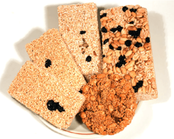

Alegrias
Alegría es un dulce mexicano fabricado con semillas de amaranto y miel o azúcar. El amaranto es originario de México y desde tiempos prehispánicos, además de formar parte de la dieta de los indígenas, se utilizó como moneda de cambio y con fines ceremoniales.
Comprar